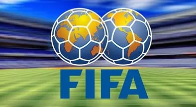

Сою́з европе́йских футбо́льных ассоциа́ций
(англ. Union of European Football Associations, сокр. UEFA,
в русской транслитерации УЕФА) — организация, управляющая футболом в Европе и некоторых западных регионах Азии.

Международная федерация футбола
(фр. Fédération internationale de football association, сокр. FIFA) —
главная футбольная организация, являющаяся крупнейшим международным руководящим органом в футболе, футзале и пляжном футболе.